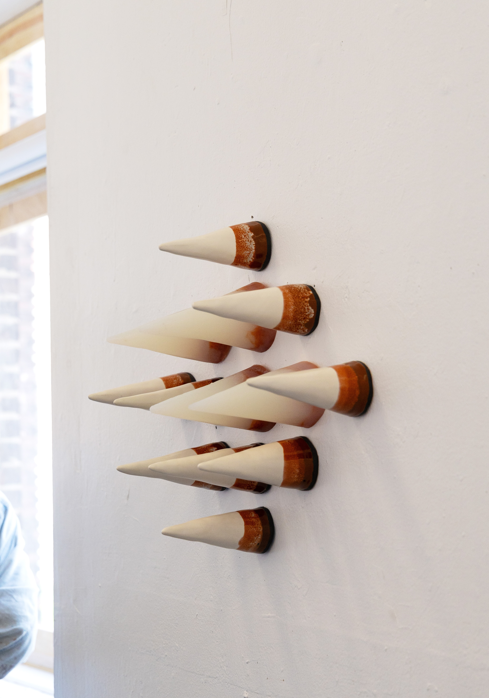

Hedgehog’s Dilemma explores the quiet tension between longing and distance, intimacy and harm—reflecting the unpredictable emotional landscapes we navigate as social beings.
The installation features a sequence of pointed ceramic and silicone cones projecting from the wall. These contrasting materials—rigid ceramic and soft, translucent silicone—embody a physical and emotional duality, where expected security often reveals surprising vulnerability.
Rooted in the psychological metaphor of the same name, the work confronts the reality that human connection is shaped by inevitable misalignments. As social animals, we approach others with the hope of warmth, comfort, and understanding—but those very desires often collide with our own and others’ limitations. Expectations are placed on closeness: that it will soothe, that it will endure, that it will not harm. Yet the reality—what we cannot plan for—is that intimacy often comes with discomfort, tension, and the unspoken risk of emotional pain.
Each cone holds this contradiction: the sharp point anticipates resistance, while the soft glow of silicone suggests tenderness. In this way, Hedgehog’s Dilemma reveals the fragile choreography of human connection—where every approach is shaped not only by longing but by expectation. We reach toward others with hopes: to be seen, to be understood. Yet these expectations are not guaranteed to be met.
What happens when our search for comfort meets resistance, or when our best intentions cause unintended pain?
